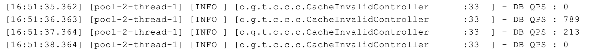
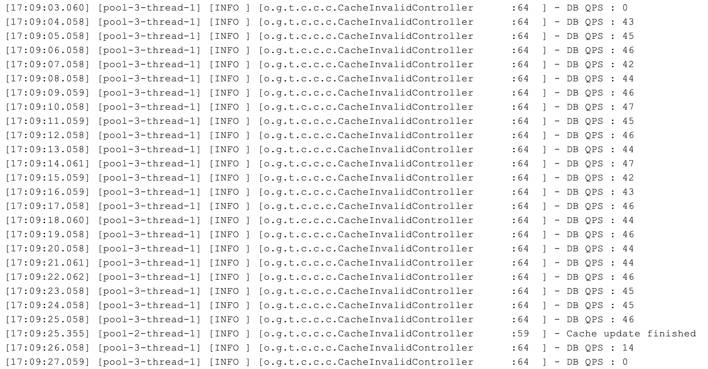
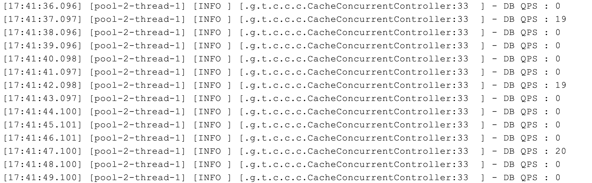
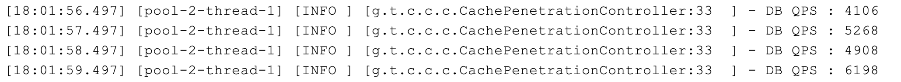
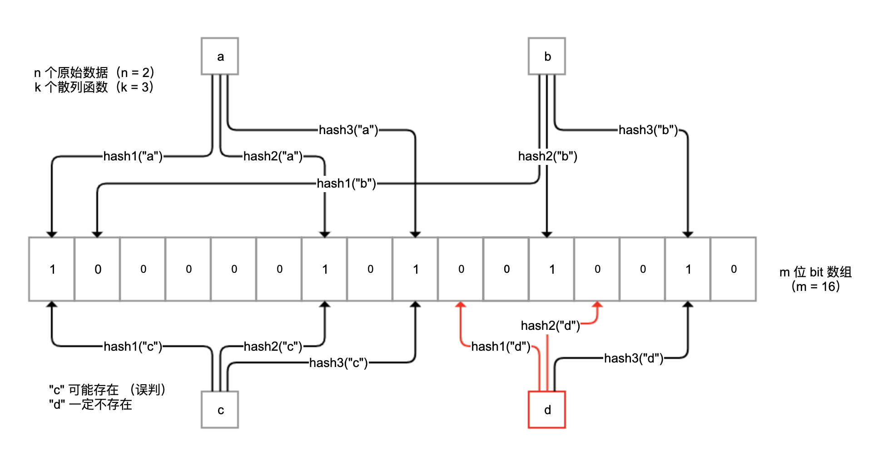

- 00 开篇词 业务代码真的会有这么多坑？.md.html
- 01 使用了并发工具类库，线程安全就高枕无忧了吗？.md.html
- 02 代码加锁：不要让“锁”事成为烦心事.md.html
- 03 线程池：业务代码最常用也最容易犯错的组件.md.html
- 04 连接池：别让连接池帮了倒忙.md.html
- 05 HTTP调用：你考虑到超时、重试、并发了吗？.md.html
- 06 2成的业务代码的Spring声明式事务，可能都没处理正确.md.html
- 07 数据库索引：索引并不是万能药.md.html
- 08 判等问题：程序里如何确定你就是你？.md.html
- 09 数值计算：注意精度、舍入和溢出问题.md.html
- 10 集合类：坑满地的List列表操作.md.html
- 11 空值处理：分不清楚的null和恼人的空指针.md.html
- 12 异常处理：别让自己在出问题的时候变为瞎子.md.html
- 13 日志：日志记录真没你想象的那么简单.md.html
- 14 文件IO：实现高效正确的文件读写并非易事.md.html
- 15 序列化：一来一回你还是原来的你吗？.md.html
- 16 用好Java 8的日期时间类，少踩一些“老三样”的坑.md.html
- 17 别以为“自动挡”就不可能出现OOM.md.html
- 18 当反射、注解和泛型遇到OOP时，会有哪些坑？.md.html
- 19 Spring框架：IoC和AOP是扩展的核心.md.html
- 20 Spring框架：框架帮我们做了很多工作也带来了复杂度.md.html
- 21 代码重复：搞定代码重复的三个绝招.md.html
- 22 接口设计：系统间对话的语言，一定要统一.md.html
- 23 缓存设计：缓存可以锦上添花也可以落井下石.md.html
- 24 业务代码写完，就意味着生产就绪了？.md.html
- 25 异步处理好用，但非常容易用错.md.html
- 26 数据存储：NoSQL与RDBMS如何取长补短、相辅相成？.md.html
- 27 数据源头：任何客户端的东西都不可信任.md.html
- 28 安全兜底：涉及钱时，必须考虑防刷、限量和防重.md.html
- 29 数据和代码：数据就是数据，代码就是代码.md.html
- 30 如何正确保存和传输敏感数据？.md.html
- 31 加餐1：带你吃透课程中Java 8的那些重要知识点（一）.md.html
- 32 加餐2：带你吃透课程中Java 8的那些重要知识点（二）.md.html
- 33 加餐3：定位应用问题，排错套路很重要.md.html
- 34 加餐4：分析定位Java问题，一定要用好这些工具（一）.md.html
- 35 加餐5：分析定位Java问题，一定要用好这些工具（二）.md.html
- 36 加餐6：这15年来，我是如何在工作中学习技术和英语的？.md.html
- 37 加餐7：程序员成长28计.md.html
- 38 加餐8：Java程序从虚拟机迁移到Kubernetes的一些坑.md.html
- 答疑篇：代码篇思考题集锦（一）.md.html
- 答疑篇：代码篇思考题集锦（三）.md.html
- 答疑篇：代码篇思考题集锦（二）.md.html
- 答疑篇：加餐篇思考题答案合集.md.html
- 答疑篇：安全篇思考题答案合集.md.html
- 答疑篇：设计篇思考题答案合集.md.html
- 结束语 写代码时，如何才能尽量避免踩坑？.md.html
- 捐赠
23 缓存设计：缓存可以锦上添花也可以落井下石
今天，我从设计的角度，与你聊聊缓存。
通常我们会使用更快的介质（比如内存）作为缓存，来解决较慢介质（比如磁盘）读取数据慢的问题，缓存是用空间换时间，来解决性能问题的一种架构设计模式。更重要的是，磁盘上存储的往往是原始数据，而缓存中保存的可以是面向呈现的数据。这样一来，缓存不仅仅是加快了 IO，还可以减少原始数据的计算工作。
此外，缓存系统一般设计简单，功能相对单一，所以诸如 Redis 这种缓存系统的整体吞吐量，能达到关系型数据库的几倍甚至几十倍，因此缓存特别适用于互联网应用的高并发场景。
使用 Redis 做缓存虽然简单好用，但使用和设计缓存并不是 set 一下这么简单，需要注意缓存的同步、雪崩、并发、穿透等问题。今天，我们就来详细聊聊。
不要把 Redis 当作数据库
通常，我们会使用 Redis 等分布式缓存数据库来缓存数据，但是千万别把 Redis 当做数据库来使用。我就见过许多案例，因为 Redis 中数据消失导致业务逻辑错误，并且因为没有保留原始数据，业务都无法恢复。
Redis 的确具有数据持久化功能，可以实现服务重启后数据不丢失。这一点，很容易让我们误认为 Redis 可以作为高性能的 KV 数据库。
其实，从本质上来看，Redis（免费版）是一个内存数据库，所有数据保存在内存中，并且直接从内存读写数据响应操作，只不过具有数据持久化能力。所以，Redis 的特点是，处理请求很快，但无法保存超过内存大小的数据。
备注：VM 模式虽然可以保存超过内存大小的数据，但是因为性能原因从 2.6 开始已经被废弃。此外，Redis 企业版提供了 Redis on Flash 可以实现 Key+ 字典 + 热数据保存在内存中，冷数据保存在 SSD 中。
因此，把 Redis 用作缓存，我们需要注意两点。
第一，从客户端的角度来说，缓存数据的特点一定是有原始数据来源，且允许丢失，即使设置的缓存时间是 1 分钟，在 30 秒时缓存数据因为某种原因消失了，我们也要能接受。当数据丢失后，我们需要从原始数据重新加载数据，不能认为缓存系统是绝对可靠的，更不能认为缓存系统不会删除没有过期的数据。
第二，从 Redis 服务端的角度来说，缓存系统可以保存的数据量一定是小于原始数据的。首先，我们应该限制 Redis 对内存的使用量，也就是设置 maxmemory 参数；其次，我们应该根据数据特点，明确 Redis 应该以怎样的算法来驱逐数据。
从Redis 的文档可以看到，常用的数据淘汰策略有：
allkeys-lru，针对所有 Key，优先删除最近最少使用的 Key；
volatile-lru，针对带有过期时间的 Key，优先删除最近最少使用的 Key；
volatile-ttl，针对带有过期时间的 Key，优先删除即将过期的 Key（根据 TTL 的值）；
allkeys-lfu（Redis 4.0 以上），针对所有 Key，优先删除最少使用的 Key；
volatile-lfu（Redis 4.0 以上），针对带有过期时间的 Key，优先删除最少使用的 Key。
其实，这些算法是 Key 范围 +Key 选择算法的搭配组合，其中范围有 allkeys 和 volatile 两种，算法有 LRU、TTL 和 LFU 三种。接下来，我就从 Key 范围和算法角度，和你说说如何选择合适的驱逐算法。
首先，从算法角度来说，Redis 4.0 以后推出的 LFU 比 LRU 更“实用”。试想一下，如果一个 Key 访问频率是 1 天一次，但正好在 1 秒前刚访问过，那么 LRU 可能不会选择优先淘汰这个 Key，反而可能会淘汰一个 5 秒访问一次但最近 2 秒没有访问过的 Key，而 LFU 算法不会有这个问题。而 TTL 会比较“头脑简单”一点，优先删除即将过期的 Key，但有可能这个 Key 正在被大量访问。
然后，从 Key 范围角度来说，allkeys 可以确保即使 Key 没有 TTL 也能回收，如果使用的时候客户端总是“忘记”设置缓存的过期时间，那么可以考虑使用这个系列的算法。而 volatile 会更稳妥一些，万一客户端把 Redis 当做了长效缓存使用，只是启动时候初始化一次缓存，那么一旦删除了此类没有 TTL 的数据，可能就会导致客户端出错。
所以，不管是使用者还是管理者都要考虑 Redis 的使用方式，使用者需要考虑应该以缓存的姿势来使用 Redis，管理者应该为 Redis 设置内存限制和合适的驱逐策略，避免出现 OOM。
注意缓存雪崩问题
由于缓存系统的 IOPS 比数据库高很多，因此要特别小心短时间内大量缓存失效的情况。这种情况一旦发生，可能就会在瞬间有大量的数据需要回源到数据库查询，对数据库造成极大的压力，极限情况下甚至导致后端数据库直接崩溃。这就是我们常说的缓存失效，也叫作缓存雪崩。
从广义上说，产生缓存雪崩的原因有两种：
第一种是，缓存系统本身不可用，导致大量请求直接回源到数据库；
第二种是，应用设计层面大量的 Key 在同一时间过期，导致大量的数据回源。
第一种原因，主要涉及缓存系统本身高可用的配置，不属于缓存设计层面的问题，所以今天我主要和你说说如何确保大量 Key 不在同一时间被动过期。
程序初始化的时候放入 1000 条城市数据到 Redis 缓存中，过期时间是 30 秒；数据过期后从数据库获取数据然后写入缓存，每次从数据库获取数据后计数器 +1；在程序启动的同时，启动一个定时任务线程每隔一秒输出计数器的值，并把计数器归零。
压测一个随机查询某城市信息的接口，观察一下数据库的 QPS：
@Autowired
private StringRedisTemplate stringRedisTemplate;
private AtomicInteger atomicInteger = new AtomicInteger();
@PostConstruct
public void wrongInit() {
//初始化1000个城市数据到Redis，所有缓存数据有效期30秒
IntStream.rangeClosed(1, 1000).forEach(i -> stringRedisTemplate.opsForValue().set("city" + i, getCityFromDb(i), 30, TimeUnit.SECONDS));
log.info("Cache init finished");
//每秒一次，输出数据库访问的QPS
Executors.newSingleThreadScheduledExecutor().scheduleAtFixedRate(() -> {
log.info("DB QPS : {}", atomicInteger.getAndSet(0));
}, 0, 1, TimeUnit.SECONDS);
}
@GetMapping("city")
public String city() {
//随机查询一个城市
int id = ThreadLocalRandom.current().nextInt(1000) + 1;
String key = "city" + id;
String data = stringRedisTemplate.opsForValue().get(key);
if (data == null) {
//回源到数据库查询
data = getCityFromDb(id);
if (!StringUtils.isEmpty(data))
//缓存30秒过期
stringRedisTemplate.opsForValue().set(key, data, 30, TimeUnit.SECONDS);
}
return data;
}
private String getCityFromDb(int cityId) {
//模拟查询数据库，查一次增加计数器加一
atomicInteger.incrementAndGet();
return "citydata" + System.currentTimeMillis();
}
使用 wrk 工具，设置 10 线程 10 连接压测 city 接口：
wrk -c10 -t10 -d 100s http://localhost:45678/cacheinvalid/city
启动程序 30 秒后缓存过期，回源的数据库 QPS 最高达到了 700 多：

解决缓存 Key 同时大规模失效需要回源，导致数据库压力激增问题的方式有两种。
方案一，差异化缓存过期时间，不要让大量的 Key 在同一时间过期。比如，在初始化缓存的时候，设置缓存的过期时间是 30 秒 +10 秒以内的随机延迟（扰动值）。这样，这些 Key 不会集中在 30 秒这个时刻过期，而是会分散在 30~40 秒之间过期：
@PostConstruct
public void rightInit1() {
//这次缓存的过期时间是30秒+10秒内的随机延迟
IntStream.rangeClosed(1, 1000).forEach(i -> stringRedisTemplate.opsForValue().set("city" + i, getCityFromDb(i), 30 + ThreadLocalRandom.current().nextInt(10), TimeUnit.SECONDS));
log.info("Cache init finished");
//同样1秒一次输出数据库QPS：
Executors.newSingleThreadScheduledExecutor().scheduleAtFixedRate(() -> {
log.info("DB QPS : {}", atomicInteger.getAndSet(0));
}, 0, 1, TimeUnit.SECONDS);
}
修改后，缓存过期时的回源不会集中在同一秒，数据库的 QPS 从 700 多降到了最高 100 左右：

方案二，让缓存不主动过期。初始化缓存数据的时候设置缓存永不过期，然后启动一个后台线程 30 秒一次定时把所有数据更新到缓存，而且通过适当的休眠，控制从数据库更新数据的频率，降低数据库压力：
@PostConstruct
public void rightInit2() throws InterruptedException {
CountDownLatch countDownLatch = new CountDownLatch(1);
//每隔30秒全量更新一次缓存
Executors.newSingleThreadScheduledExecutor().scheduleAtFixedRate(() -> {
IntStream.rangeClosed(1, 1000).forEach(i -> {
String data = getCityFromDb(i);
//模拟更新缓存需要一定的时间
try {
TimeUnit.MILLISECONDS.sleep(20);
} catch (InterruptedException e) { }
if (!StringUtils.isEmpty(data)) {
//缓存永不过期，被动更新
stringRedisTemplate.opsForValue().set("city" + i, data);
}
});
log.info("Cache update finished");
//启动程序的时候需要等待首次更新缓存完成
countDownLatch.countDown();
}, 0, 30, TimeUnit.SECONDS);
Executors.newSingleThreadScheduledExecutor().scheduleAtFixedRate(() -> {
log.info("DB QPS : {}", atomicInteger.getAndSet(0));
}, 0, 1, TimeUnit.SECONDS);
countDownLatch.await();
}
这样修改后，虽然缓存整体更新的耗时在 21 秒左右，但数据库的压力会比较稳定：

关于这两种解决方案，我们需要特别注意以下三点：
方案一和方案二是截然不同的两种缓存方式，如果无法全量缓存所有数据，那么只能使用方案一；
即使使用了方案二，缓存永不过期，同样需要在查询的时候，确保有回源的逻辑。正如之前所说，我们无法确保缓存系统中的数据永不丢失。
不管是方案一还是方案二，在把数据从数据库加入缓存的时候，都需要判断来自数据库的数据是否合法，比如进行最基本的判空检查。
之前我就遇到过这样一个重大事故，某系统会在缓存中对基础数据进行长达半年的缓存，在某个时间点 DBA 把数据库中的原始数据进行了归档（可以认为是删除）操作。因为缓存中的数据一直在所以一开始没什么问题，但半年后的一天缓存中数据过期了，就从数据库中查询到了空数据加入缓存，爆发了大面积的事故。
这个案例说明，缓存会让我们更不容易发现原始数据的问题，所以在把数据加入缓存之前一定要校验数据，如果发现有明显异常要及时报警。
说到这里，我们再仔细看一下回源 QPS 超过 700 的截图，可以看到在并发情况下，总共 1000 条数据回源达到了 1002 次，说明有一些条目出现了并发回源。这，就是我后面要讲到的缓存并发问题。
注意缓存击穿问题
在某些 Key 属于极端热点数据，且并发量很大的情况下，如果这个 Key 过期，可能会在某个瞬间出现大量的并发请求同时回源，相当于大量的并发请求直接打到了数据库。这种情况，就是我们常说的缓存击穿或缓存并发问题。
我们来重现下这个问题。在程序启动的时候，初始化一个热点数据到 Redis 中，过期时间设置为 5 秒，每隔 1 秒输出一下回源的 QPS：
@PostConstruct
public void init() {
//初始化一个热点数据到Redis中，过期时间设置为5秒
stringRedisTemplate.opsForValue().set("hotsopt", getExpensiveData(), 5, TimeUnit.SECONDS);
//每隔1秒输出一下回源的QPS
Executors.newSingleThreadScheduledExecutor().scheduleAtFixedRate(() -> {
log.info("DB QPS : {}", atomicInteger.getAndSet(0));
}, 0, 1, TimeUnit.SECONDS);
}
@GetMapping("wrong")
public String wrong() {
String data = stringRedisTemplate.opsForValue().get("hotsopt");
if (StringUtils.isEmpty(data)) {
data = getExpensiveData();
//重新加入缓存，过期时间还是5秒
stringRedisTemplate.opsForValue().set("hotsopt", data, 5, TimeUnit.SECONDS);
}
return data;
}
可以看到，每隔 5 秒数据库都有 20 左右的 QPS：

如果回源操作特别昂贵，那么这种并发就不能忽略不计。这时，我们可以考虑使用锁机制来限制回源的并发。比如如下代码示例，使用 Redisson 来获取一个基于 Redis 的分布式锁，在查询数据库之前先尝试获取锁：
@Autowired
private RedissonClient redissonClient;
@GetMapping("right")
public String right() {
String data = stringRedisTemplate.opsForValue().get("hotsopt");
if (StringUtils.isEmpty(data)) {
RLock locker = redissonClient.getLock("locker");
//获取分布式锁
if (locker.tryLock()) {
try {
data = stringRedisTemplate.opsForValue().get("hotsopt");
//双重检查，因为可能已经有一个B线程过了第一次判断，在等锁，然后A线程已经把数据写入了Redis中
if (StringUtils.isEmpty(data)) {
//回源到数据库查询
data = getExpensiveData();
stringRedisTemplate.opsForValue().set("hotsopt", data, 5, TimeUnit.SECONDS);
}
} finally {
//别忘记释放，另外注意写法，获取锁后整段代码try+finally，确保unlock万无一失
locker.unlock();
}
}
}
return data;
}
这样，可以把回源到数据库的并发限制在 1：

在真实的业务场景下，不一定要这么严格地使用双重检查分布式锁进行全局的并发限制，因为这样虽然可以把数据库回源并发降到最低，但也限制了缓存失效时的并发。可以考虑的方式是：
方案一，使用进程内的锁进行限制，这样每一个节点都可以以一个并发回源数据库；
方案二，不使用锁进行限制，而是使用类似 Semaphore 的工具限制并发数，比如限制为 10，这样既限制了回源并发数不至于太大，又能使得一定量的线程可以同时回源。
注意缓存穿透问题
在之前的例子中，缓存回源的逻辑都是当缓存中查不到需要的数据时，回源到数据库查询。这里容易出现的一个漏洞是，缓存中没有数据不一定代表数据没有缓存，还有一种可能是原始数据压根就不存在。
比如下面的例子。数据库中只保存有 ID 介于 0（不含）和 10000（包含）之间的用户，如果从数据库查询 ID 不在这个区间的用户，会得到空字符串，所以缓存中缓存的也是空字符串。如果使用 ID=0 去压接口的话，从缓存中查出了空字符串，认为是缓存中没有数据回源查询，其实相当于每次都回源：
@GetMapping("wrong")
public String wrong(@RequestParam("id") int id) {
String key = "user" + id;
String data = stringRedisTemplate.opsForValue().get(key);
//无法区分是无效用户还是缓存失效
if (StringUtils.isEmpty(data)) {
data = getCityFromDb(id);
stringRedisTemplate.opsForValue().set(key, data, 30, TimeUnit.SECONDS);
}
return data;
}
private String getCityFromDb(int id) {
atomicInteger.incrementAndGet();
//注意，只有ID介于0（不含）和10000（包含）之间的用户才是有效用户，可以查询到用户信息
if (id > 0 && id <= 10000) return "userdata";
//否则返回空字符串
return "";
}
压测后数据库的 QPS 达到了几千：

如果这种漏洞被恶意利用的话，就会对数据库造成很大的性能压力。这就是缓存穿透。
这里需要注意，缓存穿透和缓存击穿的区别：
缓存穿透是指，缓存没有起到压力缓冲的作用；
而缓存击穿是指，缓存失效时瞬时的并发打到数据库。
解决缓存穿透有以下两种方案。
方案一，对于不存在的数据，同样设置一个特殊的 Value 到缓存中，比如当数据库中查出的用户信息为空的时候，设置 NODATA 这样具有特殊含义的字符串到缓存中。这样下次请求缓存的时候还是可以命中缓存，即直接从缓存返回结果，不查询数据库：
@GetMapping("right")
public String right(@RequestParam("id") int id) {
String key = "user" + id;
String data = stringRedisTemplate.opsForValue().get(key);
if (StringUtils.isEmpty(data)) {
data = getCityFromDb(id);
//校验从数据库返回的数据是否有效
if (!StringUtils.isEmpty(data)) {
stringRedisTemplate.opsForValue().set(key, data, 30, TimeUnit.SECONDS);
}
else {
//如果无效，直接在缓存中设置一个NODATA，这样下次查询时即使是无效用户还是可以命中缓存
stringRedisTemplate.opsForValue().set(key, "NODATA", 30, TimeUnit.SECONDS);
}
}
return data;
}
但，这种方式可能会把大量无效的数据加入缓存中，如果担心大量无效数据占满缓存的话还可以考虑方案二，即使用布隆过滤器做前置过滤。
布隆过滤器是一种概率型数据库结构，由一个很长的二进制向量和一系列随机映射函数组成。它的原理是，当一个元素被加入集合时，通过 k 个散列函数将这个元素映射成一个 m 位 bit 数组中的 k 个点，并置为 1。
检索时，我们只要看看这些点是不是都是 1 就（大概）知道集合中有没有它了。如果这些点有任何一个 0，则被检元素一定不在；如果都是 1，则被检元素很可能在。
原理如下图所示：

布隆过滤器不保存原始值，空间效率很高，平均每一个元素占用 2.4 字节就可以达到万分之一的误判率。这里的误判率是指，过滤器判断值存在而实际并不存在的概率。我们可以设置布隆过滤器使用更大的存储空间，来得到更小的误判率。
你可以把所有可能的值保存在布隆过滤器中，从缓存读取数据前先过滤一次：
如果布隆过滤器认为值不存在，那么值一定是不存在的，无需查询缓存也无需查询数据库；
对于极小概率的误判请求，才会最终让非法 Key 的请求走到缓存或数据库。
要用上布隆过滤器，我们可以使用 Google 的 Guava 工具包提供的 BloomFilter 类改造一下程序：启动时，初始化一个具有所有有效用户 ID 的、10000 个元素的 BloomFilter，在从缓存查询数据之前调用其 mightContain 方法，来检测用户 ID 是否可能存在；如果布隆过滤器说值不存在，那么一定是不存在的，直接返回：
private BloomFilter<Integer> bloomFilter;
@PostConstruct
public void init() {
//创建布隆过滤器，元素数量10000，期望误判率1%
bloomFilter = BloomFilter.create(Funnels.integerFunnel(), 10000, 0.01);
//填充布隆过滤器
IntStream.rangeClosed(1, 10000).forEach(bloomFilter::put);
}
@GetMapping("right2")
public String right2(@RequestParam("id") int id) {
String data = "";
//通过布隆过滤器先判断
if (bloomFilter.mightContain(id)) {
String key = "user" + id;
//走缓存查询
data = stringRedisTemplate.opsForValue().get(key);
if (StringUtils.isEmpty(data)) {
//走数据库查询
data = getCityFromDb(id);
stringRedisTemplate.opsForValue().set(key, data, 30, TimeUnit.SECONDS);
}
}
return data;
}
对于方案二，我们需要同步所有可能存在的值并加入布隆过滤器，这是比较麻烦的地方。如果业务规则明确的话，你也可以考虑直接根据业务规则判断值是否存在。
其实，方案二可以和方案一同时使用，即将布隆过滤器前置，对于误判的情况再保存特殊值到缓存，双重保险避免无效数据查询请求打到数据库。
注意缓存数据同步策略
前面提到的 3 个案例，其实都属于缓存数据过期后的被动删除。在实际情况下，修改了原始数据后，考虑到缓存数据更新的及时性，我们可能会采用主动更新缓存的策略。这些策略可能是：
先更新缓存，再更新数据库；
先更新数据库，再更新缓存；
先删除缓存，再更新数据库，访问的时候按需加载数据到缓存；
先更新数据库，再删除缓存，访问的时候按需加载数据到缓存。
那么，我们应该选择哪种更新策略呢？我来和你逐一分析下这 4 种策略：
“先更新缓存再更新数据库”策略不可行。数据库设计复杂，压力集中，数据库因为超时等原因更新操作失败的可能性较大，此外还会涉及事务，很可能因为数据库更新失败，导致缓存和数据库的数据不一致。
“先更新数据库再更新缓存”策略不可行。一是，如果线程 A 和 B 先后完成数据库更新，但更新缓存时却是 B 和 A 的顺序，那很可能会把旧数据更新到缓存中引起数据不一致；二是，我们不确定缓存中的数据是否会被访问，不一定要把所有数据都更新到缓存中去。
“先删除缓存再更新数据库，访问的时候按需加载数据到缓存”策略也不可行。在并发的情况下，很可能删除缓存后还没来得及更新数据库，就有另一个线程先读取了旧值到缓存中，如果并发量很大的话这个概率也会很大。
“先更新数据库再删除缓存，访问的时候按需加载数据到缓存”策略是最好的。虽然在极端情况下，这种策略也可能出现数据不一致的问题，但概率非常低，基本可以忽略。举一个“极端情况”的例子，比如更新数据的时间节点恰好是缓存失效的瞬间，这时 A 先读取到了旧值，随后在 B 操作数据库完成更新并且删除了缓存之后，A 再把旧值加入缓存。
需要注意的是，更新数据库后删除缓存的操作可能失败，如果失败则考虑把任务加入延迟队列进行延迟重试，确保数据可以删除，缓存可以及时更新。因为删除操作是幂等的，所以即使重复删问题也不是太大，这又是删除比更新好的一个原因。
因此，针对缓存更新更推荐的方式是，缓存中的数据不由数据更新操作主动触发，统一在需要使用的时候按需加载，数据更新后及时删除缓存中的数据即可。
重点回顾
今天，我主要是从设计的角度，和你分享了数据缓存的三大问题。
第一，我们不能把诸如 Redis 的缓存数据库完全当作数据库来使用。我们不能假设缓存始终可靠，也不能假设没有过期的数据必然可以被读取到，需要处理好缓存的回源逻辑；而且要显式设置 Redis 的最大内存使用和数据淘汰策略，避免出现 OOM 的问题。
第二，缓存的性能比数据库好很多，我们需要考虑大量请求绕过缓存直击数据库造成数据库瘫痪的各种情况。对于缓存瞬时大面积失效的缓存雪崩问题，可以通过差异化缓存过期时间解决；对于高并发的缓存 Key 回源问题，可以使用锁来限制回源并发数；对于不存在的数据穿透缓存的问题，可以通过布隆过滤器进行数据存在性的预判，或在缓存中也设置一个值来解决。
第三，当数据库中的数据有更新的时候，需要考虑如何确保缓存中数据的一致性。我们看到，“先更新数据库再删除缓存，访问的时候按需加载数据到缓存”的策略是最为妥当的，并且要尽量设置合适的缓存过期时间，这样即便真的发生不一致，也可以在缓存过期后数据得到及时同步。
最后，我要提醒你的是，在使用缓存系统的时候，要监控缓存系统的内存使用量、命中率、对象平均过期时间等重要指标，以便评估系统的有效性，并及时发现问题。
今天用到的代码，我都放在了 GitHub 上，你可以点击这个链接查看。
思考与讨论
在聊到缓存并发问题时，我们说到热点 Key 回源会对数据库产生的压力问题，如果 Key 特别热的话，可能缓存系统也无法承受，毕竟所有的访问都集中打到了一台缓存服务器。如果我们使用 Redis 来做缓存，那可以把一个热点 Key 的缓存查询压力，分散到多个 Redis 节点上吗？
大 Key 也是数据缓存容易出现的一个问题。如果一个 Key 的 Value 特别大，那么可能会对 Redis 产生巨大的性能影响，因为 Redis 是单线程模型，对大 Key 进行查询或删除等操作，可能会引起 Redis 阻塞甚至是高可用切换。你知道怎么查询 Redis 中的大 Key，以及如何在设计上实现大 Key 的拆分吗？
关于缓存设计，你还遇到过哪些坑呢？我是朱晔，欢迎在评论区与我留言分享你的想法，也欢迎你把今天的内容分享给你的朋友或同事，一起交流。
© 2019 - 2023 Liangliang Lee. Powered by gin and hexo-theme-book.